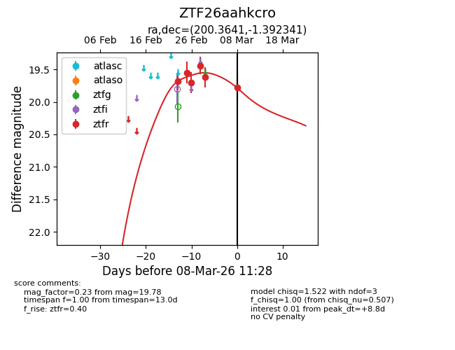
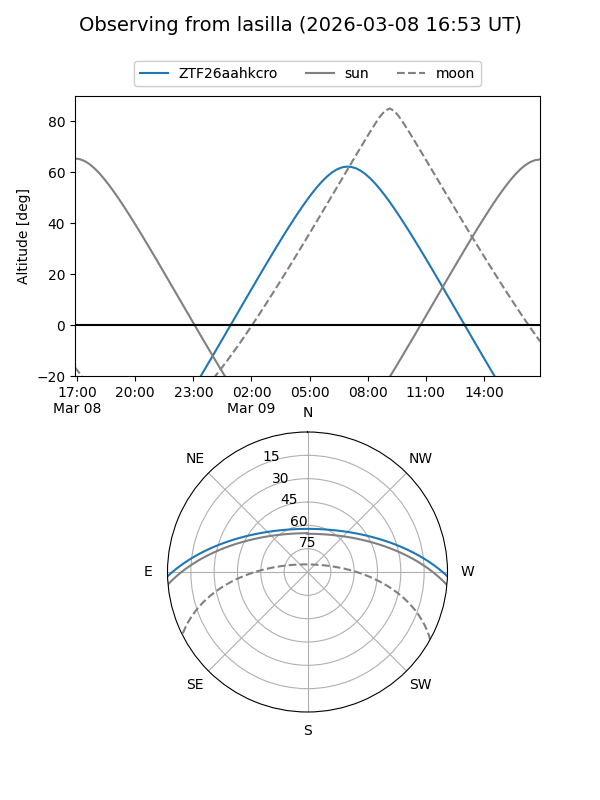
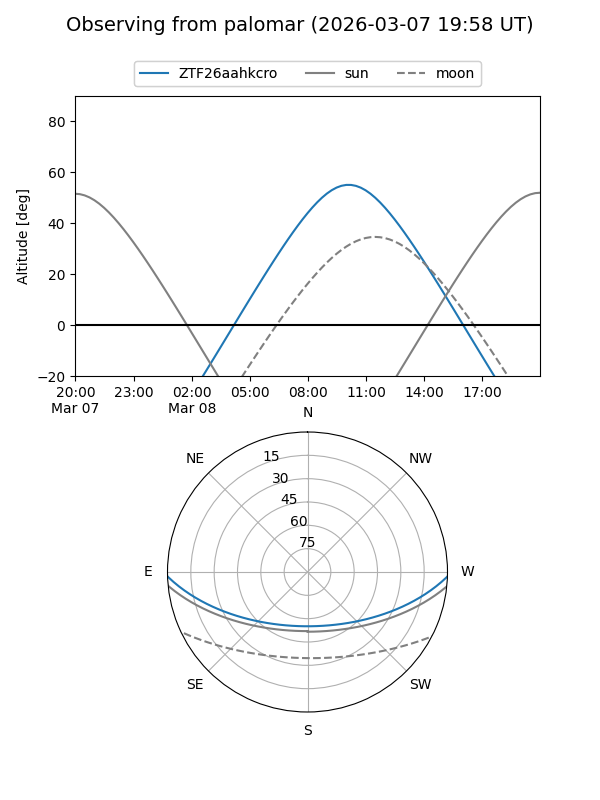
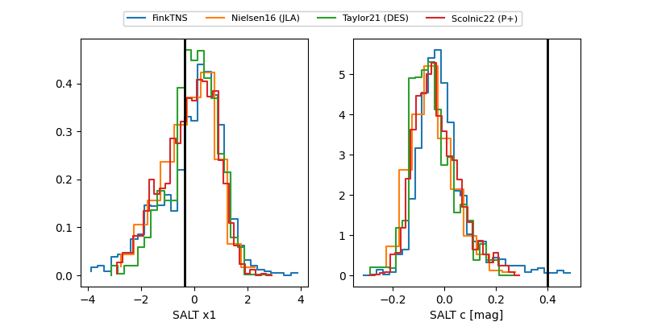

ZTF26aahkcro
Target ZTF26aahkcro at 2026-03-08 11:31
Aliases and brokers:
FINK: link
Lasair: link
ALeRCE: link
alt names
ZTF26aahkcro (ztf,fink_ztf)
Coordinates:
equatorial (ra, dec) = 200.3641,-1.39234
equatorial (HMS+DMS) = 13:21:27.38,-01:23:32.43
galactic (l, b) = (318.3459,+60.57791)
Flags:
Photometry:
last ztfr=19.78
6 ztfr detections
Lightcurve

Visibility


Additional plots
